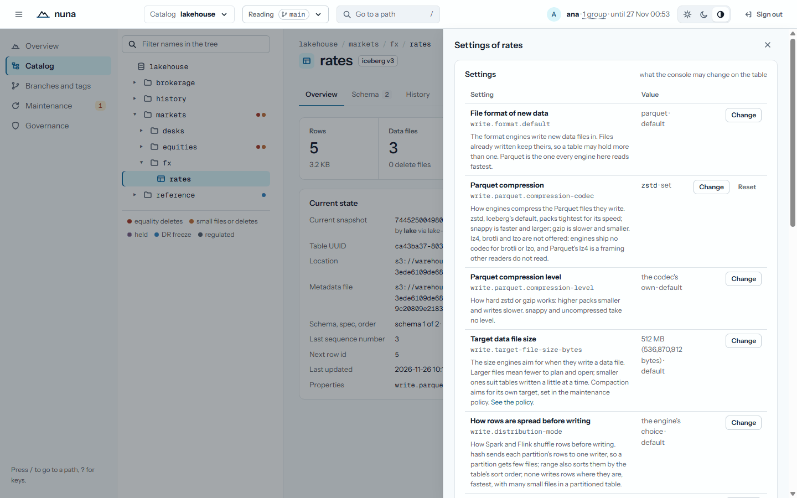

Change a table's settings
Change a table's write settings, such as its file format, compression or delete mode, from the console's Settings drawer or as table properties from an engine.
A table's settings are Iceberg table properties. A change, from the console or an engine, is a commit to the table: every commit rule applies, it needs modify, and the audit trail records it. Snapshot expiry, compaction and orphan removal are not properties; they are set in the maintenance policy (Set a catalog's maintenance policy).
Before you begin
- Your groups hold
modifyon the table, or on its namespace or catalog. - To change a table on a catalog branch, read the branch: the change commits there. Through a tag no change is offered.
Change a setting
-
Open the table and select Settings.
The drawer opens over the table with two panels: Settings, what the console may change, and Every property, each property set on the table, whoever set it.
-
Select Change on the setting's line.
The dialog, named after the setting and the table, says what the setting does and shows its property key, the values it takes and its default.
-
Enter or choose the value and select Set it.
The console checks the value before sending it. The answer reads, for instance, Parquet compression is now zstd.
Reset removes the property, so the default applies again; confirm with Reset it.

curl -sS -X POST "$NUNA/v1/trading/namespaces/equities/tables/fills" \
-H "Authorization: Bearer $TOKEN" \
-H "Content-Type: application/json" \
-d '{"requirements": [],
"updates": [{"action": "set-properties", "updates": {"write.delete.mode": "merge-on-read"}},
{"action": "remove-properties", "removals": ["write.parquet.compression-level"]}]}'The server answers 200 with the table's new metadata.
ALTER TABLE trading.equities.fills SET TBLPROPERTIES ('write.delete.mode' = 'merge-on-read');
ALTER TABLE trading.equities.fills UNSET TBLPROPERTIES ('write.parquet.compression-level');An engine may set any key; the console lists only the settings below and shows every other key read-only.
The settings the console changes
| Setting | Property | Values | Default |
|---|---|---|---|
| File format of new data | write.format.default | parquet, avro, orc | parquet |
| Parquet compression | write.parquet.compression-codec | zstd, snappy, gzip, uncompressed | zstd |
| Parquet compression level | write.parquet.compression-level | 1 to 22 for zstd, 1 to 9 for gzip; none for the others | the codec's own |
| Target data file size | write.target-file-size-bytes | 16 MB to 4 GB | 512 MB |
| How rows are spread before writing | write.distribution-mode | none, hash, range | the engine's choice |
| How deletes rewrite rows | write.delete.mode | copy-on-write, merge-on-read | copy-on-write |
| How updates rewrite rows | write.update.mode | copy-on-write, merge-on-read | copy-on-write |
| How merges rewrite rows | write.merge.mode | copy-on-write, merge-on-read | copy-on-write |
| Column statistics kept | write.metadata.metrics.default | none, counts, truncate(16), full | truncate(16) |
| Earlier metadata files listed | write.metadata.previous-versions-max | 1 to 10,000 | 100 |
Merge-on-read needs format version 2 or later. Spark honours the three modes; Trino always merges on read. A namespace's settings drawer offers one setting, Description (comment), at most 1,000 characters.
If it fails
| What you see | Why | What to do |
|---|---|---|
Merge-on-read needs format version 2 or later, and this table is version 1. in the dialog | The table is Iceberg format version 1. | Upgrade the table's format version first, or keep copy-on-write. |
400 Property write.data.path must lie within the table location …, not … | A path property points outside the table's location. The same holds for write.metadata.path, write.object-storage.path and write.folder-storage.path. | Leave the path properties unset, or point them inside the table's location. |
400 Property encryption.key-id is fixed when the table is created | The commit changed the table's encryption key id. | Make a new table for a new key. |
400 Location is assigned by the catalog: …, not … | The commit changed the table's location. | Leave the location alone; nuna assigns it. |
403 Writes to … are frozen for DR reconcile: … | The table, a namespace above it or the catalog is frozen. | Change it after the freeze is lifted. |
403 ForbiddenException naming modify | Your groups lack modify on the table. | Ask a grant admin (Grant and revoke access). |
See also
- Table properties: every property nuna reads or refuses.
- Set a catalog's maintenance policy: expiry, compaction and orphan removal.
- The table page: the Settings drawer and the table's tabs.
How this page was checked
Written from catalog-server/src/main/resources/nuna/ui/settings.js, catalog-server/src/main/resources/nuna/ui/table.js, catalog-core/src/main/java/nuna/catalog/core/commit/Rules.java and catalog-server/src/main/java/nuna/catalog/server/rest/Guard.java, checked against commit b3e8582f on 2026-11-26.
No setting was changed on the local demo.